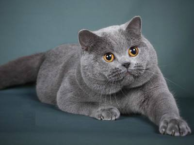
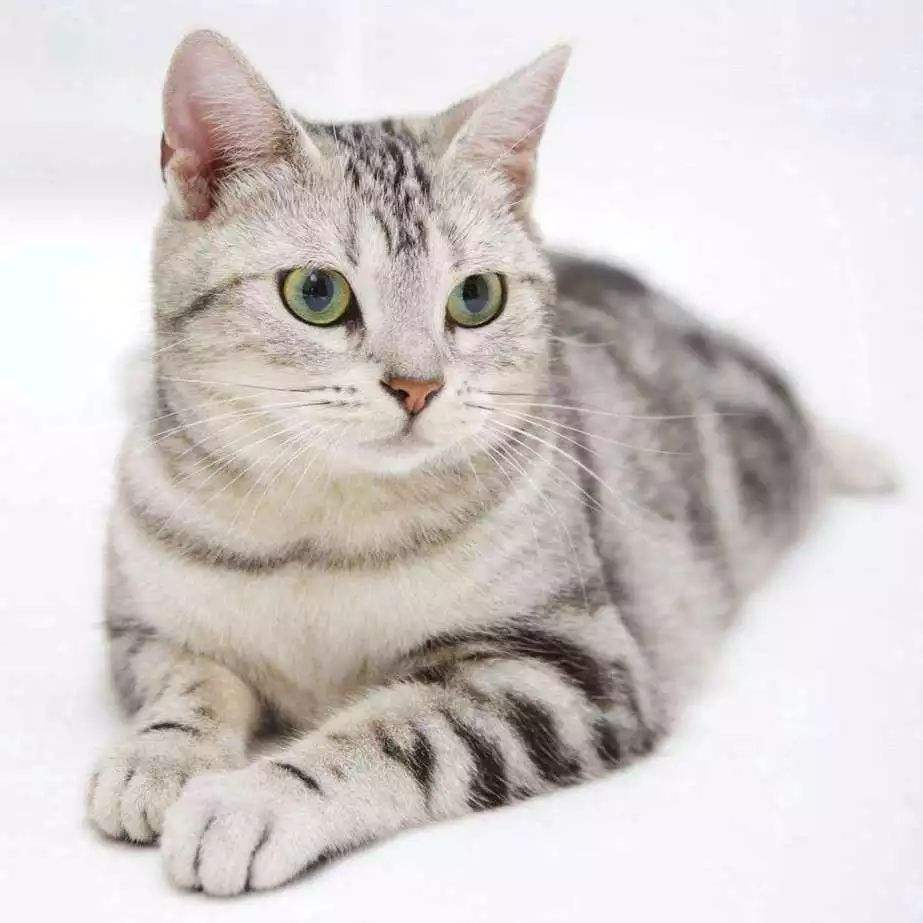
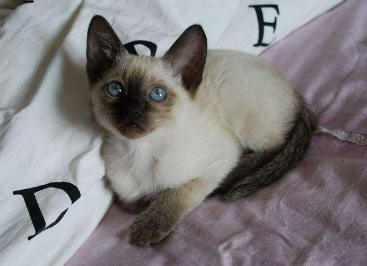

| 首页 | 猫猫 | 狗狗 | 兔兔 | 其它 | 期末 |
下面是三种常见的宠物猫的简介：
|  | 英国短毛猫（British Shorthair） 体形圆胖，四肢粗短发达，毛短而密，头大脸圆，温柔平静，对人友善，极易饲养。大而圆的眼睛根据被毛不同而呈现各种颜色。作为一个古老的猫品种，其历史可追溯至古罗马时期的家猫，由于拥有悠久的育种历史，可以称得上是猫家族中的典范。英国短毛猫除了拥有固定而聚，代表性的遗传特征之外，又具有丰富的变异性，如背毛色眼睛颜色等。更重要的是，有了广泛的配种历史后，这种猫拥有了更健康的身体和更温驯的性格。 |
|  | 美国短毛猫（American Shorthair） 是原产美国的一种猫，其祖先为欧洲早期移民带到北美的猫种，与英国短毛猫和欧洲短毛猫同类。据记载，五月花号上携带了数只猫以帮助除鼠。该品种的猫是在街头巷尾收集来的猫当中选种、并和进口品种如英国短毛猫、缅甸猫和波斯猫杂交培育而成。美国短毛猫素以体格魁伟，骨胳粗壮，肌肉发达，生性聪明，性格温顺而著称，是短毛猫类中大型品种。被毛厚密，毛色多达30余种，其中银色条纹品种尤为名贵。 |
|  | 暹罗猫（Siamese） 世界著名的短毛猫，也是短毛猫的代表品种。种族原产于暹罗（今泰国），故名暹罗猫。在200多年前，这种珍贵的猫仅在泰国的皇宫和大寺院中饲养，是足不出户的贵族。暹罗猫能够较好适应主人当地的气候，且性格刚烈好动，机智灵活，好奇心特强，善解人意。 |